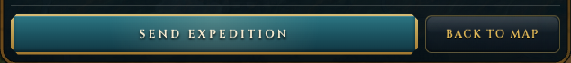
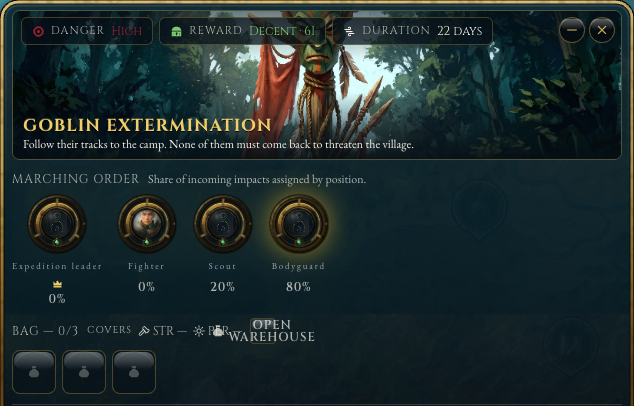
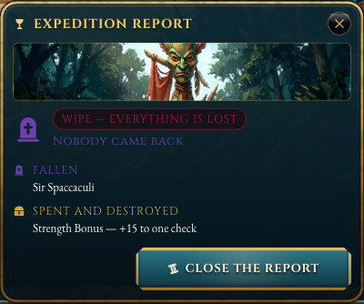

BTN-1 · Forma del pulsante principale
Vietata: la placca smalto verde acqua con cornice d'ottone e angoli tagliati (SkinButton variant="cta"), oggi su «SEND EXPEDITION», «CLOSE THE REPORT» e circa 20 componenti. Ogni opzione è mostrata nei quattro stati e, sotto, nel piè del planner a larghezza reale con «Torna alla mappa» come secondario. Una sola grammatica per tutta /game.
Oggi (vietato)

A · Lastra di famiglia
B · Riga incisa
C · Stendardo
Nel planner reale (screenshot 1440×900, stesso punto del pulsante attuale)

Piè del planner a larghezza reale (634 px a 1440×900). Il primario resta a sinistra dove il giocatore lo cerca oggi; la larghezza segue la parola, non il pannello.
| Asse | A Lastra | B Riga incisa | C Stendardo |
|---|---|---|---|
| Si capisce che è un pulsante | subito | sì, con la freccia | subito |
| Peso visivo nel pannello | medio | minimo | medio |
| Coerenza con lastre e pillole | stessa materia | nuova (ma senza materia) | nuova forma tematica |
| Carattere / tema | sobrio | manoscritto | racconto (stendardo) |
| Rischio di ritorno alla «placca CTA» | basso (niente teal, niente angoli tagliati) | nullo | basso |
COL-D · Colore della morte senza viola
Oggi la morte è --skin-status-death #6d3fb0, viola: contrasto 2.57:1 sul proprio chip, ~54 file, fuori regola. La morte deve distinguersi dalla ferita (rosso #a11d33), anche per chi non distingue i colori: per luminosità, per forma (†) e per parola. Contrasti misurati sui token reali.
Oggi (vietato)

A · Osso e cenere #cdbfa3
B · Ferro freddo #93a4ad
C · Pietra #a9a49a
| Asse | A Osso | B Ferro | C Pietra |
|---|---|---|---|
| Contrasto chip / pannello | 8.65 / 9.25 | 6.35 / 6.51 | 6.58 / 6.76 |
| Distinto dalla ferita in grigio | 4.2× | 3.0× | 3.1× |
| Confusione con «disabilitato» | bassa | alta | media |
| Legame con l'oggetto (lapide) | medio | basso | alto |
Scartato: ruggine #a8553a (3.4:1 e troppo vicino alla ferita, 1.5×). L'anello notturno viola del POI giorno/notte segue lo stesso ruling ma è un altro colore (notte, non morte): va deciso a parte.
T-C2 · Rapporto di fine quest, a proporzioni reali
v5 rispetto a v4: ritratti sulle lapidi e sugli stendardi (le persone avevano solo il nome), nessun testo sotto i 12 px, quantità a badge sull'icona invece che staccata a destra, righe di finzione bilanciate (niente parola orfana), una nota di racconto accanto alla lapide per non lasciare il vuoto.
Il rapporto di oggi è «sproporzionato»: icona-lapide di 34 px accanto a testo di 13 px, striscia d'immagine di 64 px che taglia il volto, titoli di sezione minuscoli, e un pulsante che pesa più di tutto il resto. La proposta segue EXP A «Lapidi», con una gerarchia fissa e una scala di misure dichiarata. Nessun testo sopra l'immagine (stesso ruling del POI detail). I selettori qui sotto applicano al rapporto il pulsante (BTN-1) e il colore della morte (COL-D) che scegli.
Oggi · 1:1
Sconfitta · proposta 1:1
Nessuno è tornato
Il fumo dell'accampamento copre il bosco. Le tende restano in piedi.
Il suo posto nel Santuario resta vuoto.
+15 a una prova · consumato
Vittoria · stesso schema 1:1
L'accampamento è caduto
Non ne resta uno. La strada per il villaggio è di nuovo sicura.
+61 al tesoro del villaggio
trofeo, va al Magazzino
Proporzioni dichiarate
| Livello | Oggetto | Misura |
|---|---|---|
| 1 | esito (una frase) | Cinzel 22 px |
| 2 | finzione (una riga) | Garamond corsivo 15 px |
| 3 | persone (lapidi / stendardi) | 104×132, ritratto 44, nome 12 px |
| 4 | oggetti persi / bottino | icona 36, quantità a badge, testo 15 px + riga 13 px |
| — | etichette di sezione | Cinzel 12 px + filetto |
| — | azione | una, 36 px, a destra |
| — | immagine | 400×150, senza testo sopra |
Ordine fisso: chi (testata), cosa è successo (immagine + esito + finzione), cosa è costato, cosa resta, un'azione. Le sezioni si rivelano una alla volta come oggi (clic o tasto). Il titolo «Expedition report» sparisce: il titolo è la quest stessa. La cronaca completa resta un collegamento, non un secondo pulsante.
Non deciso qui: suono e animazione d'entrata (fuori scope), testo localizzato reale (le frasi di finzione arrivano dal manoscritto della quest).